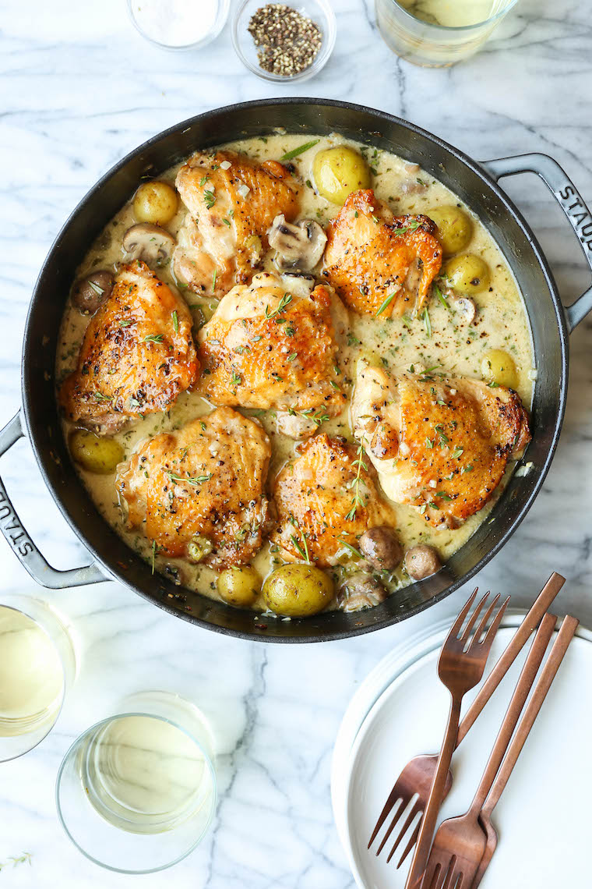

Chicken Casserole

Million Dollar Chicken Casserole
Perfectly-seared golden brown chicken thighs, tender baby golden potatoes, juicy mushrooms,
and an herb-wine sauce that you can basically guzzle down.
It’s perfection on a crisp, 55 degree Fall day – or let’s be honest, any day of the week.
Serve with the leftover white wine for a complete meal.
Ingredients
- 6 bone-in, skin-on chicken thighs
- Kosher salt and freshly ground black pepper, to taste
- 2 tablespoons unsalted butter
- 8 ounces cremini mushrooms, halved
- 3 large shallots, diced
- 2 stalks celery, diced
- 3 cloves garlic, minced
- 3 tablespoons all-purpose flour
- 1/2 cup dry white wine
- 2 cups chicken stock
- 1 pound baby gold potatoes, halved
- 4 sprigs fresh thyme
- 1 sprig fresh rosemary
- 1 bay leaf
- 1/4 cup heavy cream
Instructions
- Preheat oven to 325 degrees F.
- Season chicken thighs with 1 teaspoon salt and 1/2 teaspoon pepper.
- Melt butter in a large skillet over medium heat. Working in batches, add chicken,
skin-side down, and sear both sides until golden brown, about 2-3 minutes per side;
set aside.
- Add mushrooms, shallots and celery, and cook, stirring occasionally,
until mushrooms are tender and browned, about 5-7 minutes; season with salt and pepper,
to taste.
- Stir in garlic until fragrant, about 1 minute.
- Whisk in flour until lightly browned, about 1 minute.
- Stir in wine, scraping any browned bits from the bottom of the skillet. Stir in chicken
stock, potatoes, thyme, rosemary and bay leaf. Return chicken to the skillet.
- Place into oven and bake until potatoes are tender and chicken has completely cooked
through, reaching an internal temperature of 175 degrees F, about 40-45 minutes.
- Stir in heavy cream; season with salt and pepper, to taste.
- Serve immediately.
Home